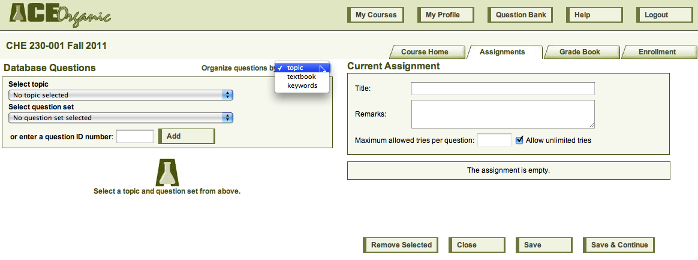
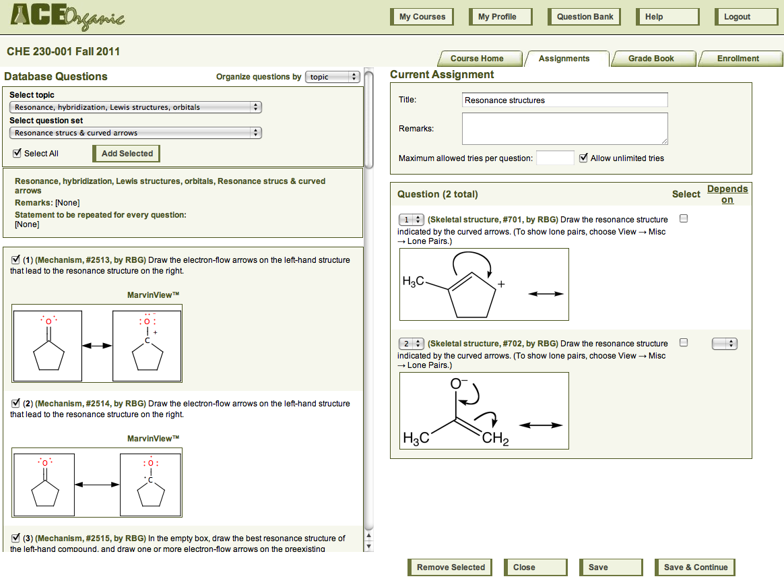
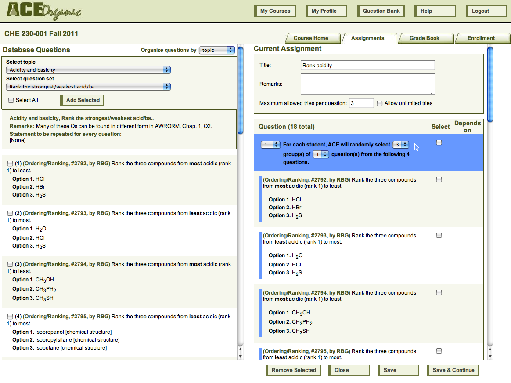
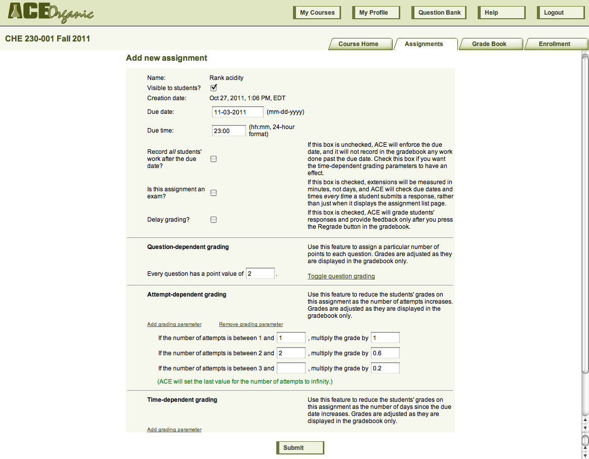
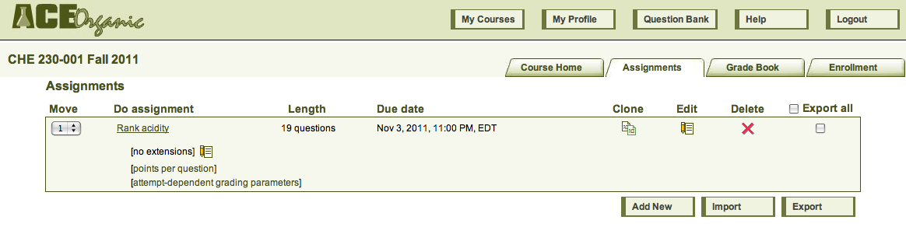

On the course home page, press the Assignment tab to see the assignment list page. Initially, it has no assignments. Press Add new to start assembling an assignment. ACE will then bring you to the assignment content assembly page.

On the left, ACE displays questions from the database, from which you choose questions to add to the assignment, and on the right, ACE displays the questions that you have already added to the assignment. There are three ways to choose questions from the database: by topic, by textbook, and by keyword. Most instructors find it most useful to select questions by topic. As you select names of topics and question sets from the pulldown menus, the questions in those sets appear on the left. You select questions from this list to add to your assignment.
You can choose to allow students an unlimited number of tries per question, or you can limit the number of tries. You can choose to make a question "depend" on an earlier one; if you do, ACE will show the later question to the student only after the student has answered the earlier one correctly.

You can also choose to randomize the assignment, so that different students see different subsets of a group of questions.

After you have saved the content of the assignment, you can set its due date and time and tell ACE whether ACE should enforce the due date or whether the due date is merely a suggestion. You can also set grading parameters that change the number of points per question or reduce credit for late responses or for responses that take multiple attempts.

After you submit your changes, ACE will return you to the assignment list page. ACE will provide a link to any grading parameters that you added to the assignment; students will be able to see these parameters as well.

ACE also provides a link directly back to the assignment properties page, where you can grant extensions on an assignment. Simply press the Edit icon next to "[no extensions]," and ACE will bring you back to the assignment properties page. Click on Extensions to get a list of students in the class, and enter the desired extension next to the appropriate student's name.
To work an assignment, simply click on the assignment's name.